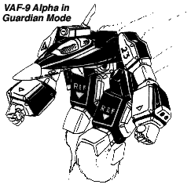
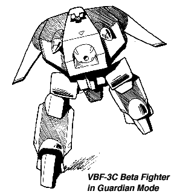

In 2033, shortly after the end of the First Invid War, REF Command approved funding and personnel requests for Project Shadowchaser, a plan to design a new series of Veritechs to replace the aging VAF-6 Alpha and VBF-1 Beta fighters in the REF military. The Veritech designs would be centered around the new Shadow Cloaking technology being developed on Tirol to shield protoculture emissions from Invid sensors. The first mecha designs to be produced by Project Shadowchaser were the VAF-7A Shadow Fighter, the VBF-1S Shadow Beta and the VF-1V Shadow Vindicator, all three of which were unveiled in 2037. These original Shadow Fighters were conceived as technical experiments intended to test the benefits and limitations of the new Shadow Cloaking Device in conjunction with the then-standard VAF-6 Alpha and VBF-1 Beta designs. Despite the fact that the new fighters were not perfected and had barely even been tested, the new Shadow Fighters were rushed into production during the mad push of 2038 to build mecha for the upcoming Jupiter Assault Mission against the Invid Regis. All operational VAF-7A and VBF-1S Veritechs were included in the Jupiter Mission, and most were either lost with the SDF-3 or destroyed during the First Battle of Reflex Point.
Fortunately the loss of most of the original prototypes did not bring about the end of Project Shadowchaser. Back on Tirol the project engineers continued to develop the Shadow Fighter concept, this time designing a whole new fighter chassis around the cloaking device. They decided to stick with the Alpha/Beta concept of the the older VAF Veritechs, where multiple mecha could combine to form a more powerful war machine and augment each other's abilities when necessary. Since REF military analysts felt that the majority of future combat with the Invid would take place in a planetary atmosphere, the designers borrowed some of the older body styling of the VF-1 series Veritechs for their new fighter, including a variable wing design and a more streamlined, less angular body shape. The primary result was an aerodynamic fighter design that could achieve significantly higher speeds than the older VAF-6 and VAF-7 Alpha Fighters in an atmosphere. The designers continued to improve on the new mecha's performance by including the newly-designed FF-3000 Fusion/Protoculture turbines, which were capable of delivering considerably more thrust than older veritech engines. New armaments such as head lasers, a more compact SRM missile system, wing hardpoints for variable missile loads, and the new GU-25 gun pod were also included. The resulting mecha was named the VAF-8 Transatmospheric Veritech Alpha Fighter, and would become the standard Veritech fighter of the REF for many years to come.
Although most of the technology and parts of the VAF-8 were traditional enough to be mass-produced quickly, the shadow cloaking device still remained the major bottleneck of the production process. The cloaking technology was so complex and expensive that cloaking devices simply could not be manufactured quickly in an assembly line factory setup. In order to maximize the number of mecha included in the Prometheus Assault Mission, some of the VAF-8 Veritechs produced were sent out without being equipped with shadow cloaking devices. The non-shadow VAF-8s were of course much cheaper to build and could be produced in far larger numbers, but efforts would still be made to produce as many Shadow VAF-8s as feasibly possible. Even without the shadow device, however, the VAF-8 remained a formidable fighter and a powerful new weapon for the REF. Roughly 60% of the fighters used by the Icarus and Prometheus missions were not equipped with a SF-10 Cloaking Device.
 When the Icarus Recon Mission to Earth was approved, Colonels John Korcheck and Roger Harris requested a special version of the VAF-8 for their mission. They wanted a two-man version of the VAF-8 that could serve as both a reconnaissance fighter and a command-and-control mecha. Project Shadowchaser responded with a variation of the VAF-8 designed with the recon and scouting in mind, the VAF-8R Reconnaissance Alpha. The VAF-8R had an extended body with a second cockpit behind that of the pilot, designated the recon equipment operator (REO) position. The recon alpha was equipped with an advanced suite of sensors, including exotic systems like sonar and seismic sensors. To help protect the planes and their valuable data, all Recon Alphas were equipped with shadow cloaking devices to protect them from Invid attack. The price for a single VAF-8R was impressive; equal to approximately 4 standard VAF-8 Alphas. Still, the mecha was ideal for Korcheck's and Harris' purposes. Only a limited run of VAF-8R Recon Alphas were produced, and almost all were dispatched with the Icarus Recon Mission on the S.S. Icarus.
Shadowchaser engineers also developed a new Beta Fighter to go along with the VAF-8 Alphas. The VBF-2 Beta Fighter was a much-improved version of the classic VBF-1 that had served well in the First Invid War. The new mecha was larger than it's predecessor and had a greater capacity in its cargo bays for bombs, missiles, or passengers. The thruster system was redesigned to include two FF-3000 Fusion/Protoculture Turbines and three FF-2800 Rocket Thrusters, providing much more thrust than the original VBF-1. The missile capacity for the VBF-2 was also increased to include 40 Mini-missiles, 100 SRMs, 8 MRMs, and 2 LRMs. As a final modification, four ion cannons and an internal GU-25 were included to give the Beta extra weapons to fall back on in situations where the craft could not rely on its missiles. Unlike earlier Betas, all weapons on the VBF-2 could fire in all modes, providing the new Beta with greater flexibility in firepower.
Project Shadowchaser also designed a second variation of the VBF-2 Beta to expand on a concept that was heavily used during the First and Second Invid Wars. Although the original VBF-1s were designed only for a crew of three, commanders often sacrificed the bombs in the bomb bay in order to provide extra space in the Beta for carrying passengers. Using this method the Beta could carry up to 6 troopers in cyclone armor, which could then be inserted or evacuated deep behind enemy lines. Impressed by this technique, the engineers developed the VBF-2T Transport Beta, a Beta Fighter specifically designed to transport troops quickly from place to place and also able to provide support and cover fire with necessary. Several sacrifices had to be made for the expanded cargo space, however. The VBF-2T contained 40% less weaponry than the 2A, and was limited to two modes of operation (Guardian and Fighter Transport modes). Despite this the VBF-2T proved an incredible success, and was instrumental to the insertion of scout forces on Earth during the Icarus Recon Mission.
While the VAF-8 Alpha and the VBF-2 Beta represented a significant improvement over older Veritechs, the engineers felt that they had been cheated and had not reached the full capabilities of the technology available to them at the time. Many corners had to be cut and capabilities sacrificed in order to make the VAF-8s and VBF-2s cost effective enough to be produced in the numbers the REF command wanted. The opportunity to correct this came in 2041 when the REF High Command approved additional funds to develop an Air/Space superiority fighter that could stand up to anything the Invid could conceivably throw at it, and form the core of the new offensive to retake Earth. Shadowchaser designers drooled at the opportunity. They took their inspiration for the new fighter from the old VF-1V Vindicator prototypes, and designed a new Alpha that was not quite as large as the Vindicator, but still larger than the VAF-7A and VAF-8 Alphas. The extra room would be needed to accommodate the tremendous power this new fighter needed to possess. The new fighter was designed around the new FF-4000X Experimental Fusion/Protoculture Turbines, which would supply tremendous thrust for maneuvering both inside and outside an atmosphere. The new MM-74 mini-missile system was included as the mecha's main armament, as well as a pair of TWR-30 Pulse Lasers on the head for close range combat and GR-12 SRM launchers for backup. The new Falcon MRM Missile System was also included with the veritech; the Falcon system was revolutionary in that it stored the missiles inside the wings instead of on hardpoints, protecting them from attack and allowing the mecha to convert to battloid mode while still retaining the missiles. A pair of caseless 32mm depleted uranium autocannons were included on each arm to provide another close-range punch in combat. Finally, the older EU-12 was redesigned and developed into the EU-XX Destabilizer Cannon. The resulting mecha was a quantum leap in veritech design, and was named the VAF-9 Heavy Assault Veritech Alpha Fighter.
 As with the VAF-8, a new version of the Veritech Beta Fighter (designated the VBF-3 Beta Fighter) was also designed to augment the VAF-9 Alpha. The new beta design was also built around the FF-4000X Fusion/Protoculture Turbine engines and the SF-10 Cloaking Device. However unlike the VBF-2 only one version of the VBF-3 was initially produced (the VBF-3C Combat version) as it was felt that a transport version of the VBF-3 would not be useful or cost effective when combined with the combat-oriented VAF-9. The VBF-3C was designed for close to medium range combat and was armed with 120 SRMs, 20 MRMs, and 2 LRMs as its main missile armament. The VBF-3 also included an internal EU-16 Energy Cannon that could fire in all modes as well as internal GU-XX 35mm autocannons built into each arm to provide a multi-range punch in mecha to mecha combat. Finally, a new ultra-heavyweight energy gun pod designated the EU-18 gun pod was developed for hand-held use by the VBF-3C. To top the 3C's armament off, a pair of pulse lasers were added to the head of the mecha.
The Generals planning the Prometheus Mission had high praise for the VAF-9 Alphas and VBF-3 Betas, but the tremendous firepower of the mecha came at a tremendous price. The cost of a single VAF-9/VBF-3C combo was almost as much as an entire squadron of VAF-8/VBF-2 Legioss. Still, several squadrons of VAF-9s and VBF-3s were produced for the Prometheus Mission and Icarus Mission. 12 VAF-9s and 4 VBF-3Cs (prototypes) were included with the Icarus Recon Mission on board the U.S.S. Icarus. The rest were held back to be included in the main Prometheus Attack Force that would assault the Invid Space Defenses and the new Reflex Point.


 |
http://www.mcs.net/~deitrich/index.html deitrich@mcs.net |
Last Updated: |